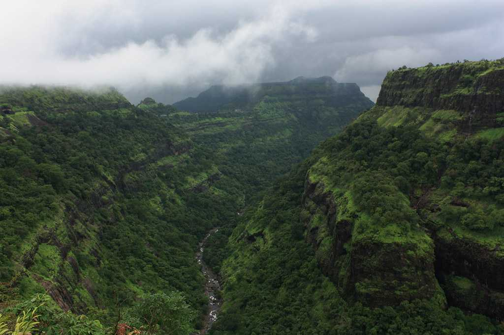

LONAVALA Among the top famous places to visit in Maharashtra, Lonavala trumps every other hill station in the state! Nestled in the heart of the Sahyadri range is the beautiful hill station in Maharashtra. Lonavala is a paradise for all kinds of tourists flocking over to enjoy the cold breeze at the mountain top in Maharashtra. Be it an adventure junkie, a trekker or a honeymooner, you would have a great time exploring the tourist attraction in Maharashtra
Places to stay: Hilton Shillim Estate Retreat and Spa, Hotel Ferreira Resort, EKO Stay, Meritas Adore Resort
Things to do: You can explore the Rajmachi Wildlife Sanctuary near Lonavala and check out some of the famous peaks in Maharashtra. You can visit Tiger's Leap and Lion's Peak as well. Of course, Pawana Lake and Bhushi Dam are some of the cool places to visit in Maharashtra.
MAHABALESHWAR Undoubtedly a haven for honeymooners in Maharashtra, Mahabaleshwar is one hill station that you should definitely visit in 2021. The hill station can be reached from Mumbai, Pune and other cities nearby. The gorgeous colonial vibe of the hill station interspersed with the cold breeze of the Sahyadris certainly make it a great place for a vacation. There are many lovely places that you can visit in Mahabaleshwar, and we do recommend that you do. Ideally, three to four days would be a perfect duration for a getaway here.
Places to stay: Le Meridien Mahabaleshwar Resort and Spa, Sagar Villa Panchgani, JK Motels, Gavson Palace Things to do: Mahabaleshwar is one of the most popular hill stations in Maharashtra which is especially perfect for honeymooners. The spectacular views from the hill station make it one of the cutest romantic rendezvous. You can check into one of their lovely resorts or hotels for a staycation. You can also indulge in mountain biking, horse riding, relish sunrise and sunset at the Wilson Peak, Connaught Peak and more. Of course, do check out Mini Kashmir and Venna Lake while you're here.
Places to stay: Le Meridien Mahabaleshwar Resort and Spa, Sagar Villa Panchgani, JK Motels, Gavson Palace Things to do: Mahabaleshwar is one of the most popular hill stations in Maharashtra which is especially perfect for honeymooners. The spectacular views from the hill station make it one of the cutest romantic rendezvous. You can check into one of their lovely resorts or hotels for a staycation. You can also indulge in mountain biking, horse riding, relish sunrise and sunset at the Wilson Peak, Connaught Peak and more. Of course, do check out Mini Kashmir and Venna Lake while you're here.

KHANDALA About 66 km from Pune is the lovely little hill station of Khandala. It is known to be a very popular hill station in Maharashtra. When in Khandala, relish the quaint vibe of the valley that encapsulates the pristine beauty of Khandala. The hill station comes with a great deal of perks including being serenaded by trekking trails, hill forts, caves and lush greenery.
Places to stay: Della Resorts, Leela's Cottage, Dukes Retreat, Villa 41
Things to do: Located close to Lonavala is Khandala, a little hamlet in the Sahyadri range that is beautiful and posh. You can visit the Rajmachi Point and Rajmachi Garden from Khandala. You can also visit some of the waterfalls in the area by going on treks. Be it biking or trekking, you would be amazed by the locales of Khandala.
AMBOLI Undoubtedly one of the most gorgeous places to visit in Maharashtra, Amboli is a lovely place that should be on your list. It is a great hill station that promises to offer very soothing and pleasant weather. As the last hill station in Maharashtra, towards the border of Goa, Amboli does have all the romantic vibes to excite your senses. You can take your bae to the hill station and be enchanted by the beauty and serenity of the valleys.
Places to stay: Vamoose Sailee, Amboli Hill Resort, Garawa Resort, Dark Forest Retreat Things to do: The perks of travelling through all the hill stations in Maharashtra is that you get to trek most of them. Amboli is also one such hill station in Maharashtra, which is known to be the perfect honeymoon destination for couples. You do not need to take a long break to visit the Himalayas when the Sahyadris can give you the chilly vibe. You can visit the Amboli Falls, catch a view of the sunset at the Amboli Sunset Point and also see what the valley looks like from Shirgaonkar Point.
Places to stay: Vamoose Sailee, Amboli Hill Resort, Garawa Resort, Dark Forest Retreat Things to do: The perks of travelling through all the hill stations in Maharashtra is that you get to trek most of them. Amboli is also one such hill station in Maharashtra, which is known to be the perfect honeymoon destination for couples. You do not need to take a long break to visit the Himalayas when the Sahyadris can give you the chilly vibe. You can visit the Amboli Falls, catch a view of the sunset at the Amboli Sunset Point and also see what the valley looks like from Shirgaonkar Point.